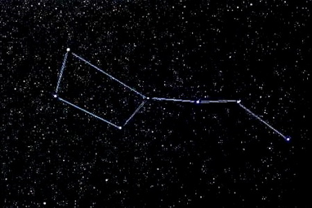

|  |
Различные названия Большой МедведицыТак как первоначально данная область неба ассоциировалась у людей только с астеризмом Большой Ковш, то большинство существовавших названий были соответствующие: Древние греки называли созвездие «Гелика», что в переводе – «раковина», иногда «Арктос» — «медведица» либо «медведь». Согласно некоторым греческим авторам Большая Медведица служила древним грекам в качестве навигатора. По словам греческого мифа Зевс превратил двух критских нимф в медведиц с целью спрятать от Кроноса. По другой версии — нимфу Каллисто, чтобы скрыть от своей сестры и жены — Геры. Индийское (на санскрите) название созвездия звучит как «Сапта Риши», что в переводе означает «семь мудрецов». Речь о семи сыновьях бога Брахмы, которые считаются прародителями всех, а также собственно творцами Вселенной. В индийской астрономии по именам мудрецов называются семь звезд Большого Ковша. Казахские кочевники называли созвездие «Семь разбойников» (Жетіқарақшы). Согласно легенде, верховное божество неба Тенгри привязал двух своих коней к Железному колышку. Здесь Железный кол («Темірқазық») – это Полярная звезда, а кони – две близкие к ней звезды (вероятно, Полярная А и Полярная Б). Тогда семь звезд Большого Ковша – это разбойники, намеревающиеся украсть коней, и потому они постоянно кружатся вокруг них. Китайские астрономы звали созвездие «Северный Ковш» («Бэйдоу»), так как в те времена ручка Большого Ковша указывала практически на северный полюс. В славянской культуре данное созвездие носило название «Лось», так как первоначально ассоциировалось с этим животным. В Древней Руси Большую Медведицу также называли «Конь на Приколе», где Большой Ковш словно конь, приколотый к Полярной звезде, движется постоянно вокруг нее – вокруг прикола. |